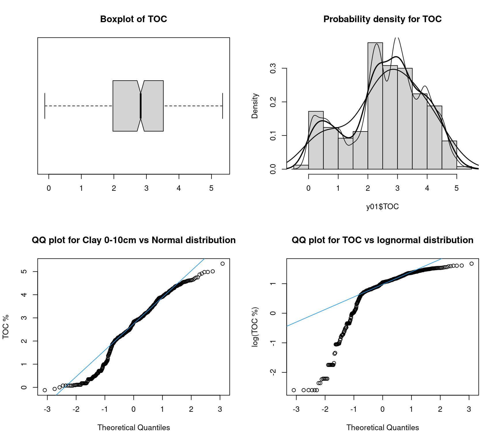

Instalar los paquetes necesarios
Establecer el directorio de trabajo
X <- read_csv("https://raw.githubusercontent.com/mat1506/Upwell_workshop/master/data/LEM_proxies.csv")
Miremos los datos
str(X) #para ver la estructura de los datos
spec_tbl_df [501 × 25] (S3: spec_tbl_df/tbl_df/tbl/data.frame)
$ ID : chr [1:501] "CHILL-LEM13-2C-1U 21-22 cm" "CHILL-LEM13-2C-1U 22-23 cm" "CHILL-LEM13-2C-1U 23-24 cm" "CHILL-LEM13-2C-1U 24-25 cm" ...
$ Unit : chr [1:501] "U1" "U1" "U1" "U1" ...
$ Facie : chr [1:501] "D1" "D1" "D1" "D1" ...
$ depth : num [1:501] 0 1 2 3 4 5 6 7 8 9 ...
$ MS : num [1:501] 44.8 55.9 NA 67.4 NA ...
$ Den : num [1:501] 1.21 1.39 NA 1.41 NA ...
$ FP : num [1:501] 0.883 0.773 NA 0.758 NA ...
$ TS : num [1:501] 0.175 0.23 0.229 0.267 0.255 ...
$ TC : num [1:501] 2.42 1.9 2.03 2.11 2.07 ...
$ TIC : num [1:501] 0 0 0 0.196 0 ...
$ TOC : num [1:501] 2.42 1.9 2.03 1.91 2.07 ...
$ BioSi : num [1:501] 19.6 18.8 19.2 20.2 19.3 ...
$ TN : num [1:501] 0.278 NA NA NA NA 0.21 NA NA NA NA ...
$ TOC/TN : num [1:501] 10.2 NA NA NA NA ...
$ d15N : num [1:501] 1.43 NA NA NA NA ...
$ d13C : num [1:501] -25.6 NA NA NA NA ...
$ Montmorillonite: chr [1:501] "Present" NA NA NA ...
$ Muscovite : chr [1:501] "0.14" NA NA NA ...
$ Talc : chr [1:501] "0.096" NA NA NA ...
$ Riebeckite : chr [1:501] "0.075" NA NA NA ...
$ Clinochlore : chr [1:501] "0.192" NA NA NA ...
$ Microcline : chr [1:501] "0.284" NA NA NA ...
$ Quartz : num [1:501] 2.21 NA NA NA NA ...
$ Albite : num [1:501] 8.72 NA NA NA NA ...
$ Amorphous : num [1:501] 39.4 NA NA NA NA NA NA NA NA NA ...
- attr(*, "spec")=
.. cols(
.. ID = col_character(),
.. Unit = col_character(),
.. Facie = col_character(),
.. depth = col_double(),
.. MS = col_double(),
.. Den = col_double(),
.. FP = col_double(),
.. TS = col_double(),
.. TC = col_double(),
.. TIC = col_double(),
.. TOC = col_double(),
.. BioSi = col_double(),
.. TN = col_double(),
.. `TOC/TN` = col_double(),
.. d15N = col_double(),
.. d13C = col_double(),
.. Montmorillonite = col_character(),
.. Muscovite = col_character(),
.. Talc = col_character(),
.. Riebeckite = col_character(),
.. Clinochlore = col_character(),
.. Microcline = col_character(),
.. Quartz = col_double(),
.. Albite = col_double(),
.. Amorphous = col_double()
.. )
- attr(*, "problems")=<externalptr> summary(X[,5:16]) # Resumen de los datos
MS Den FP TS
Min. : 24.43 Min. :1.210 Min. :0.3045 Min. :0.01617
1st Qu.: 57.16 1st Qu.:1.378 1st Qu.:0.6940 1st Qu.:0.38217
Median : 76.15 Median :1.481 Median :0.7170 Median :0.61781
Mean : 96.70 Mean :1.491 Mean :0.7113 Mean :0.76149
3rd Qu.:125.45 3rd Qu.:1.519 3rd Qu.:0.7805 3rd Qu.:1.11340
Max. :273.65 Max. :2.154 Max. :0.8832 Max. :6.82220
NA's :209 NA's :209 NA's :209
TC TIC TOC
Min. :-0.02204 Min. :0.00000 Min. :-0.1224
1st Qu.: 2.04920 1st Qu.:0.00000 1st Qu.: 1.9743
Median : 2.86890 Median :0.04557 Median : 2.8238
Mean : 2.71282 Mean :0.10466 Mean : 2.6058
3rd Qu.: 3.60770 3rd Qu.:0.18158 3rd Qu.: 3.5163
Max. : 5.59430 Max. :1.06930 Max. : 5.3409
NA's :1
BioSi TN TOC/TN d15N
Min. : 5.37 Min. :0.0360 Min. : 1.628 Min. :-1.151
1st Qu.:15.50 1st Qu.:0.1969 1st Qu.: 7.292 1st Qu.: 0.238
Median :18.42 Median :0.3006 Median : 9.696 Median : 1.380
Mean :17.64 Mean :0.3291 Mean :10.454 Mean : 1.205
3rd Qu.:20.81 3rd Qu.:0.4641 3rd Qu.:12.758 3rd Qu.: 2.040
Max. :26.62 Max. :0.7689 Max. :20.770 Max. : 3.166
NA's :33 NA's :377 NA's :378 NA's :407
d13C
Min. :-29.53
1st Qu.:-26.10
Median :-24.55
Mean :-23.66
3rd Qu.:-22.51
Max. :-16.65
NA's :407 Calcular promedios de una variable para niveles de un factor
tapply(X$TOC, X$Facie, mean) #calcular promedios por factor
D1 D2 D3 D4 D5 D6_a D6_b
1.8939686 1.6325068 3.8301412 NA 4.3219419 2.7576184 3.3545634
D6_c L1 L2 L3 L4 L5 LT2
4.3586846 0.8827930 0.4927908 0.1726453 0.4107186 0.7902270 2.7617361
T1 T10 T11 T12 T13 T14 T15
0.5375500 0.8490357 0.3697850 1.0249300 1.0517100 1.8635000 2.1030470
T16 T17 T18 T2 T3 T4 T5
1.9549800 2.6672900 0.9943400 0.5512890 0.6062123 0.6389503 1.7498500
T6 T7 T8 T9 TL1
0.8491950 0.5136960 0.4327400 0.6375590 2.2273622 Análisis exploratorio de datos y gráficos
Boxplot
boxplot(X$TOC ~ X$Unit, notch=TRUE, ylab="TOC") #compara las medias visualmente
List of 6
$ breaks : num [1:13] -0.5 0 0.5 1 1.5 2 2.5 3 3.5 4 ...
$ counts : int [1:12] 3 43 31 23 28 94 77 75 56 47 ...
$ density : num [1:12] 0.012 0.172 0.124 0.092 0.112 0.376 0.308 0.3 0.224 0.188 ...
$ mids : num [1:12] -0.25 0.25 0.75 1.25 1.75 2.25 2.75 3.25 3.75 4.25 ...
$ xname : chr "X$TOC"
$ equidist: logi TRUE
- attr(*, "class")= chr "histogram"Instalar paquetes otra forma
if(!require(dplyr)){
install.packages("dplyr")
library("dplyr")
}
Matriz de plot en una figura
y01<-na.omit(select(X,TOC))
y02<-na.omit(select(X,Unit,TOC,TIC,TS,TN))
par(mfrow=c(2,2)) # 2x2 matrix of plots in one figure
boxplot(y01$TOC, data=y01,notch=T, horizontal=T,main="Boxplot of TOC")
hist(y01$TOC, freq=F,main="Probability density for TOC")
lines(density(y01$TOC),lwd=2)
lines(density(y01$TOC, adj=.5),lwd=1)
lines(density(y01$TOC, adj=2),lwd=1.5)
qqnorm(y01$TOC, main="QQ plot for Clay 0-10cm vs Normal distribution",ylab="TOC %")
qqline(y01$TOC, col=4)
qqnorm(log(y01$TOC), main="QQ plot for TOC vs lognormal distribution",ylab="log(TOC %)")
qqline(log(y01$TOC), col=4)

ggplot Histograma
{ggplot2} es una implementación de Grammar of Graphics de Wilkinson (2006), pero no es necesario leer los libros para comenzar a usarlo. Si volvemos a los datos de Star Wars (contenidos en dplyr) y deseamos dibujar una gráfica de barras del género, las siguientes líneas son suficientes:
ggplot(data = y02) +
geom_histogram(aes(x = TOC, fill = Unit))
ggplot(y01, aes(x = TOC), bins = 30) +
geom_histogram(aes(y = ..density..), fill = 'red', alpha = 0.5) +
geom_density(colour = 'blue') + xlab(expression(bold('Simulated Samples'))) +
ylab(expression(bold('Density')))
Plot de barras
El primer argumento de la función son los datos (llamados starwars en este ejemplo), y luego la función aes (). Esta función es donde enumera las variables que desea asignar a la estética de las funciones geoms. En la segunda línea, verá que usamos la función geom_bar (). Esta función crea una gráfica de barras de la variable de género. Puede obtener diferentes tipos de gráficos utilizando diferentes funciones geom_. También puede proporcionar el argumento aes () a la función geom _ * ():

La diferencia entre estos dos enfoques es que cuando especificas la estética en la función ggplot(), todas las funciones geom _ * () que siguen heredarán esta estética. Esto es útil si desea evitar escribir el mismo código una y otra vez, pero puede ser problemático si necesita especificar una estética diferente para diferentes funciones geom _ * (). Esto quedará claro en un ejemplo posterior.
Puede agregar opciones a sus gráficos, por ejemplo, puede cambiar el sistema de coordenadas en su gráfico de barras:
ggplot(starwars, aes(gender)) +
geom_bar() +
coord_flip()

Scatter plots
Los diagramas de dispersión son muy útiles, especialmente si está tratando de averiguar la relación entre dos variables. Por ejemplo, hagamos un diagrama de dispersión de la altura frente al peso de los personajes de Star Wars:
starwars %>%
filter(!str_detect(name, "Jabba")) %>%
ggplot() +
geom_point(aes(height, mass))
Analisis Exp. Bivariate
par(mfrow=c(2,2))#
plot(y02$TIC,y02$TN,xlim=c(0,1.2),ylim=c(0,1),cex.lab=1.5, cex.axis=1.5, cex.main=1.5, cex.sub=1.5); abline(0,1,lty=2);
title("TIC vs. TN")
abline(h=mean(y02$TN)); abline(v=mean(y02$TIC))
#
plot(y02$TOC,y02$TN,xlim=c(0,5.5),ylim=c(0,1),pch=20,cex.lab=1.5, cex.axis=1.5, cex.main=1.5, cex.sub=1.5); abline(0,1,lty=2)
title("TOC vs. TN")
abline(h=mean(y02$TN)); abline(v=mean(y02$TOC))
#
plot(y02$TOC,y02$TS,cex.lab=1.5, cex.axis=1.5, cex.main=1.5, cex.sub=1.5); abline(0,1,lty=2)
title("TOC vs. TS")
abline(h=mean(y02$TS)); abline(v=mean(y02$TOC))
#
plot(y02$TOC,y02$TIC,pch=20,cex.lab=1.5, cex.axis=1.5, cex.main=1.5, cex.sub=1.5); abline(0,1,lty=2)
title("TOC vs. TIC")
abline(h=mean(y02$TIC)); abline(v=mean(y02$TOC))
Density
Facets
En algunos casos, tiene una variable de factor que separa los datos que desea representar en diferentes categorías. Si desea tener un gráfico por categoría, puede usar la función facet_grid (). Sin embargo, tenga cuidado, esta función no toma una variable como argumento, sino una fórmula, de ahí el símbolo ~ en el siguiente código:
starwars %>%
rowwise() %>%
mutate(n_films = length(films)) %>%
mutate(more_1 = case_when(n_films == 1 ~ "Exactly one movie",
n_films != 1 ~ "More than 1 movie")) %>%
mutate(human = case_when(species == "Human" ~ "Human",
species != "Human" ~ "Not Human")) %>%
filter(gender %in% c("feminine", "masculine"), !is.na(human)) %>%
ggplot(aes(height, fill = gender)) +
facet_grid(human ~ more_1) +
geom_density()
Podemos agregar una línea de regresión a este diagrama de dispersión:
starwars %>%
filter(!str_detect(name, "Jabba")) %>%
ggplot() +
geom_point(aes(height, mass, size = birth_year, colour = gender)) +
geom_smooth(aes(height, mass), method = "lm")
Correlación Bivariate
[1] 0.4002049cov(y02$TOC,y02$TS)
[1] 0.4002049[1] 1.156251[1] 0.7989956[1] 0.4331975cor(y02$TOC,y02$TS)
[1] 0.4331975cor.test(y02$TOC,y02$TS)
Pearson's product-moment correlation
data: y02$TOC and y02$TS
t = 5.3088, df = 122, p-value = 5.025e-07
alternative hypothesis: true correlation is not equal to 0
95 percent confidence interval:
0.278124 0.566263
sample estimates:
cor
0.4331975 Visualización de Correlación entre variables
if(!require(PerformanceAnalytics)){install.packages("PerformanceAnalytics")
library("PerformanceAnalytics")
}
chart.Correlation(X[,9:16],
method="pearson",
histogram=TRUE,
pch=16)